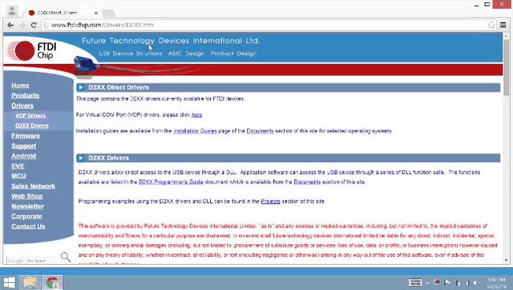

Install FTDI serial drivers
FTDI CDM drivers allow your computer to communicate with USB serial devices, including the Intel® Edison.

Do you already have FTDI CDM drivers installed?
If you have done Arduino development on your current computer before, you may already have the FTDI CDM drivers installed. Refer to Confirm installation of FTDI serial drivers to see if you need to skip over this step.
However, if you see a “New Hardware Found” message when you plug in the Intel® Edison via the UART/serial micro-USB port and the automatic device driver installation fails, you will need to install the FTDI drivers. Ignore Windows’ request to install the drivers for you and follow the steps below.

- Get the latest FTDI CDM driver installer.
- Hackathon attendees:
- On the USB key: files → Windows
- Copy CDM [version] WHQL Certified.exe to your computer.
- Online option:
- Visit ftdichip.com/Drivers/D2XX.htm.
- Scroll down to the “Currently Supported D2XX Drivers” table.
- In the row for “Windows”, click the “setup executable” link to download CDM [version] WHQL Certified.exe to your computer.
- Hackathon attendees:
-
Right-click on CDM [version] WHQL Certified.exe. Select “Run as administrator”.

-
Click “Extract” to start the installation process.

-
Follow the installation wizard prompts. Click “Next” where needed.
- Click “Finish” to close the installation wizard.